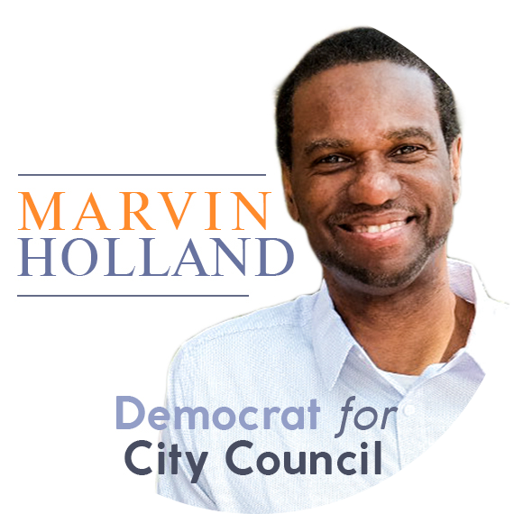

About Me
Hi there! My name is Samson Zhang. I live with my mom and sister in New York, New York and attend Phillips Academy in Andover, Massachusetts.
Education
I am completely self-taught when it comes to creative work. I learned from internet tutorials, books, and doing projects of my own.
Skills
Video

Graphics
Web

Other
Work Experience

Holland4Harlem Campaign
Graphic Designer
July 2017 - Present
Marvin Holland is a Navy Vet and longtime community activist running for NYC District 9 City Council against incumbent Bill Perkins this September.
I was initially brought on as a social media intern, but took a graphic designer role, working closely with the rest of the team to refresh branding and create social media graphics and advertisement posters.
Holland4Harlem YouTube Channel
Case Study
2 Train Robotics
Media Director
2016 - 2017
2 Train Robotics is Columbia University's Robotics Team, consisting of members from the Morris Educational Campus in the Bronx and my former high school, Columbia Secondary School.
With another team member, I founded 2 Train's Media Team. As media director, I lead the team to create our first Chairman's Award Video, a documentary of the 2016-17 season, and oversaw social media and website operations.
Prototype website: team395.github.io
2 Train Robotics' YouTube Channel
wwsalmon YouTube Channel
Cinematography/Editing
2014 - Present
I run a YouTube channel where I make tech reviews and other videos. It's my sandbox for experimenting with new cinematography and editing techniques.